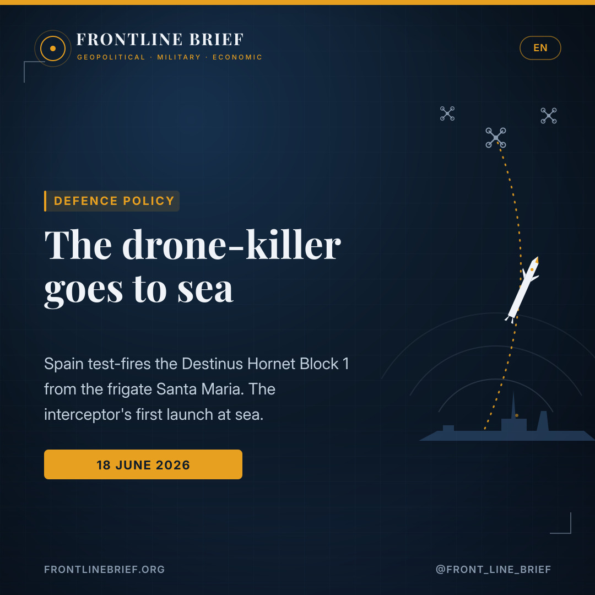
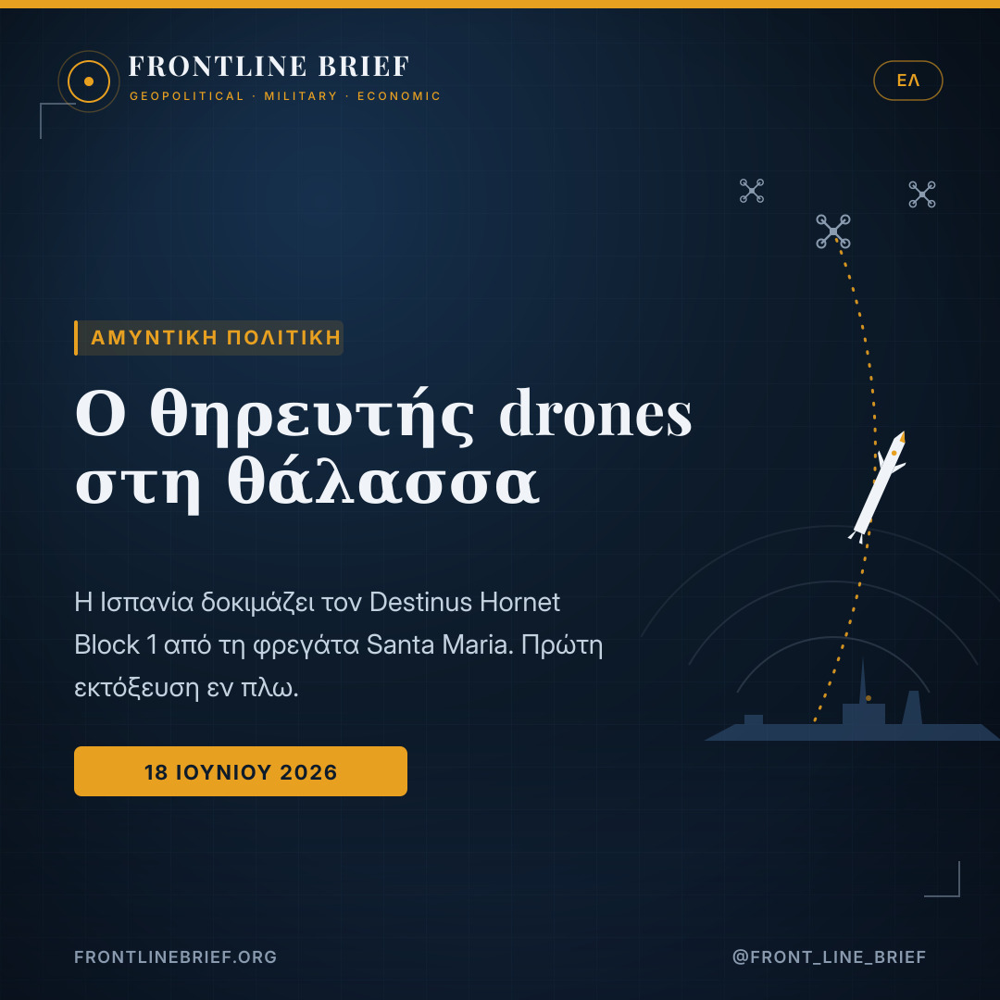
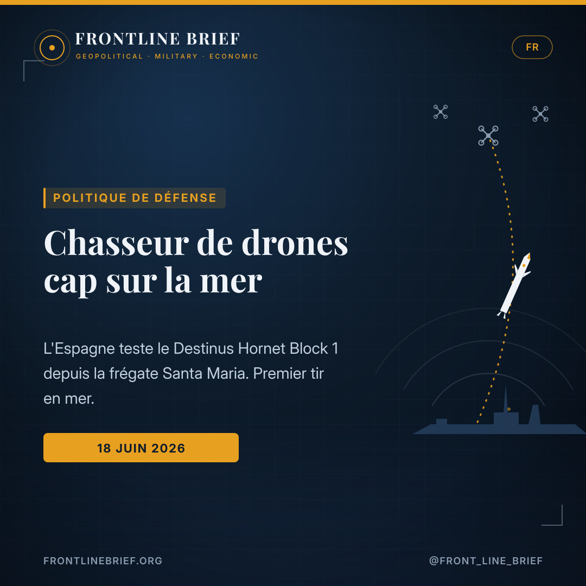
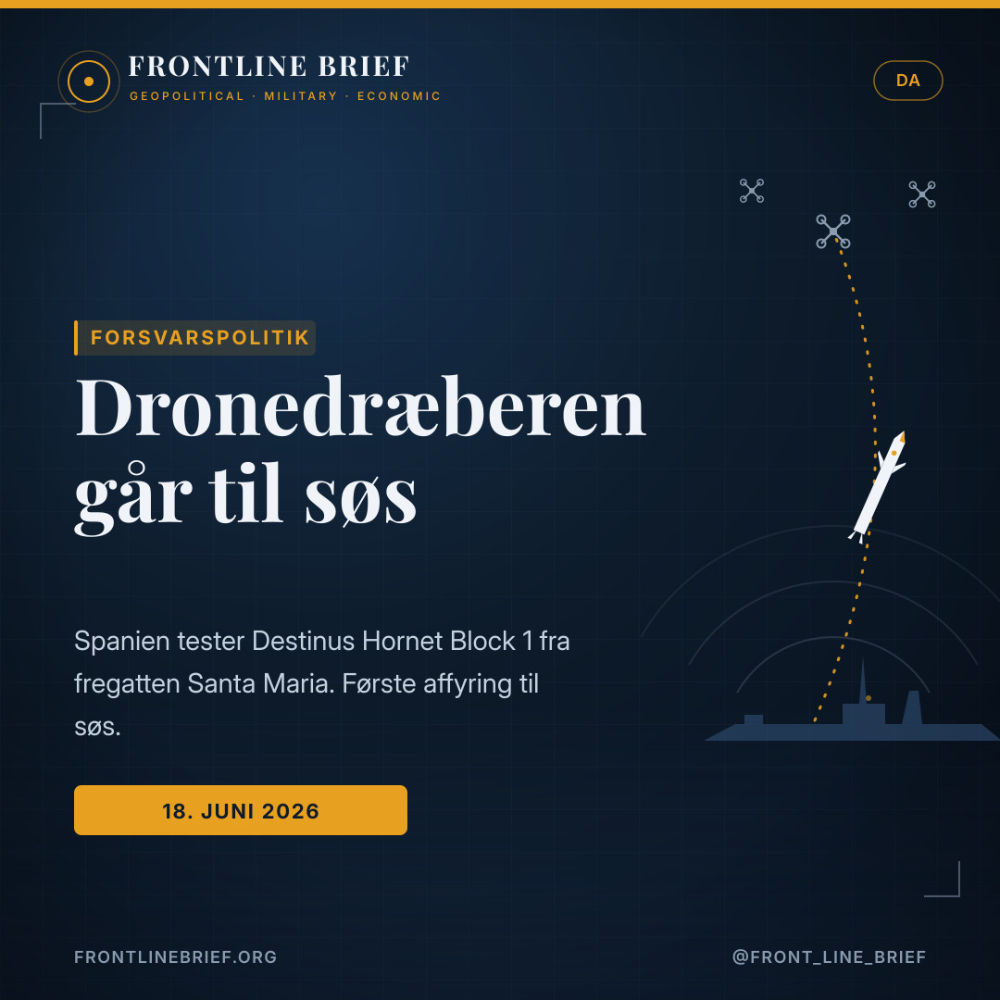

Spain fires the Hornet at sea: how Destinus' containerised interceptor went naval aboard the Santa María
The Spanish Navy has carried out the first at-sea firing of the Destinus Hornet Block 1, launching the canister-based interceptor from the frigate Santa María on 18 June 2026. The demonstration lifts containerised counter-drone defence from the firing range onto the deck of a warship, and points to a cheaper way for Europe's fleets to fight the drone swarm.




Hornet Block 1
Canister-launched · radar cue into an autonomous EO/IR and radar terminal phase · operates GNSS-denied · 1.5 kg warhead. Fired from a containerised launcher on the helo deck of frigate F-81 Santa María.
Volume and price over firepower
A conventional interceptor can top €1M, while the drones it kills cost around €35k. Containerised rounds let a warship thin a swarm without emptying its magazines.
Dual-role, and a Rheinmetall venture
Hornet Block 2 (dual-role, 3 kg, AI-coordinated swarms) is in development. In April 2026 Destinus and Rheinmetall agreed a joint venture, Rheinmetall Destinus Strike Systems, due to stand up in H2 2026.
The first shot at sea
The Spanish Navy has carried out the first at-sea firing of the Destinus Hornet Block 1, launching the canister-based interceptor from the frigate Santa María on 18 June 2026. Run jointly with the European defence-tech firm Destinus, the trial saw a single Hornet leave a containerised launcher fitted to the helicopter platform of F-81 Santa María, an ageing Oliver Hazard Perry-class frigate.
The choice of an older hull was deliberate. The point was to show that the system can be bolted onto an existing platform without the structural surgery and dedicated vertical launch cells that conventional naval missiles demand.
How the Hornet works
The Hornet Block 1 is built to hunt subsonic drones and coordinated swarms. It opens an engagement on radar cueing, then hands over to an autonomous terminal phase that fuses electro-optical, infrared and radar seekers, and it is designed to keep working when satellite navigation is jammed or spoofed. Destinus quotes a range beyond 75 km and a 1.5 kg warhead, positioning the weapon against Group 3 UAVs and saturation attacks rather than fast jets.
The maths of the swarm
That last point is the whole argument. A conventional interceptor can run past one million euros, while the drones it is fired at may cost in the region of 35,000 euros. Spending a high-value round on a cheap aircraft is a losing exchange, and navies are now looking for ways to thin out an incoming swarm without emptying their magazines.
A cheap drone can threaten a platform worth far more than itself. The answer Europe is testing is not a better missile, but a cheaper one in greater numbers.
Because the launcher sits inside a standard shipping container, it can be parked on deck or worked into a ship's existing layout, multiplying the number of ready interceptors a surface combatant can carry without cutting new launch cells into the hull. For older escorts with no spare vertical launch capacity, the appeal is obvious.
Block 2 and the Rheinmetall venture
A follow-on Hornet Block 2 is already in development as a dual-role weapon, able both to intercept drones and to strike maritime or ground targets, with a range past 150 km, a 3 kg payload and AI-coordinated swarm operation. In April 2026 Destinus and Rheinmetall agreed a joint venture, Rheinmetall Destinus Strike Systems, due to stand up in the second half of the year to build missiles for European and NATO customers.
Madrid has become an early proving ground. The same interceptor was put through a live intercept on land during the Spanish Army's TEC 3 experimentation campaign at Viator in April, watched by King Felipe VI; the naval firing now carries that interest from the army to the fleet. Spain released no detail on the threat profile, the engagement parameters or the result of the shot. What the test does signal is a direction of travel: containerised, lower-cost interceptors are heading to sea.
Η πρώτη βολή εν πλω
Το ισπανικό Πολεμικό Ναυτικό πραγματοποίησε την πρώτη εν πλω βολή του Hornet Block 1 της Destinus, εκτοξεύοντας τον αναχαιτιστή που φέρεται σε κάνιστρο από τη φρεγάτα Santa María στις 18 Ιουνίου 2026. Η δοκιμή, σε συνεργασία με την ευρωπαϊκή εταιρεία αμυντικής τεχνολογίας Destinus, περιελάμβανε την εκτόξευση ενός Hornet από εκτοξευτή-κάνιστρο στην ελικοπτεροφόρο πλατφόρμα της F-81 Santa María, μιας παλαιάς φρεγάτας κλάσης Oliver Hazard Perry.
Η επιλογή ενός γηραιού σκάφους ήταν συνειδητή: να αποδειχθεί ότι το σύστημα προσαρτάται σε υφιστάμενη πλατφόρμα χωρίς τις δομικές επεμβάσεις και τα ειδικά κάθετα φρεάτια εκτόξευσης που απαιτούν οι συμβατικοί ναυτικοί πύραυλοι.
Πώς λειτουργεί ο Hornet
Ο Hornet Block 1 σχεδιάστηκε για την αναχαίτιση υποηχητικών drones και συντονισμένων σμηνών. Ανοίγει την εμπλοκή με καθοδήγηση από ραντάρ και μεταβαίνει σε αυτόνομη τελική φάση που συνδυάζει ηλεκτρο-οπτικούς, υπέρυθρους και ραντάρ αναζητητές, ενώ λειτουργεί ακόμη και υπό παρεμβολή ή πλαστογράφηση της δορυφορικής πλοήγησης. Η Destinus αναφέρει βεληνεκές άνω των 75 χλμ. και κεφαλή 1,5 κιλού, τοποθετώντας το όπλο απέναντι σε UAV Ομάδας 3 και επιθέσεις κορεσμού.
Τα μαθηματικά του σμήνους
Εκεί ακριβώς βρίσκεται όλο το επιχείρημα. Ένας συμβατικός αναχαιτιστής μπορεί να ξεπερνά το ένα εκατομμύριο ευρώ, τη στιγμή που τα drones κατά των οποίων εκτοξεύεται κοστίζουν περίπου 35.000 ευρώ. Το να δαπανάς πανάκριβο πύραυλο για φθηνό ιπτάμενο μέσο είναι χαμένη ανταλλαγή, και τα ναυτικά αναζητούν τρόπους να αραιώσουν ένα εισερχόμενο σμήνος χωρίς να αδειάζουν τις αποθήκες τους.
Ένα φθηνό drone απειλεί πλατφόρμα πολλαπλάσιας αξίας. Η απάντηση που δοκιμάζει η Ευρώπη δεν είναι ένας καλύτερος πύραυλος, αλλά ένας φθηνότερος σε μεγαλύτερους αριθμούς.
Επειδή ο εκτοξευτής βρίσκεται μέσα σε τυποποιημένο εμπορευματοκιβώτιο, τοποθετείται στο κατάστρωμα ή εντάσσεται στη διάταξη του πλοίου, πολλαπλασιάζοντας τους έτοιμους αναχαιτιστές χωρίς να ανοιχτούν νέα φρεάτια στη γάστρα. Για παλαιότερες συνοδείες χωρίς διαθέσιμη χωρητικότητα κάθετης εκτόξευσης, το πλεονέκτημα είναι προφανές.
Το Block 2 και η κοινοπραξία με τη Rheinmetall
Ένας διάδοχος Hornet Block 2 βρίσκεται ήδη υπό ανάπτυξη ως όπλο διπλού ρόλου, ικανό τόσο να αναχαιτίζει drones όσο και να πλήττει ναυτικούς ή χερσαίους στόχους, με βεληνεκές άνω των 150 χλμ., φορτίο 3 κιλών και συντονισμό σμήνους με τεχνητή νοημοσύνη. Τον Απρίλιο του 2026 η Destinus και η Rheinmetall συμφώνησαν κοινοπραξία, τη Rheinmetall Destinus Strike Systems, που αναμένεται να λειτουργήσει στο β' εξάμηνο του έτους.
Η Μαδρίτη έχει εξελιχθεί σε πρώιμο πεδίο δοκιμών. Ο ίδιος αναχαιτιστής είχε εκτελέσει ζωντανή αναχαίτιση στην ξηρά κατά την εκστρατεία TEC 3 του ισπανικού Στρατού στο Viator τον Απρίλιο, υπό την παρακολούθηση του βασιλιά Φελίπε ΣΤ'. Η Ισπανία δεν έδωσε λεπτομέρειες για το προφίλ της απειλής ή το αποτέλεσμα της βολής· αυτό που σηματοδοτεί η δοκιμή είναι μια κατεύθυνση πορείας.
Le premier tir en mer
La marine espagnole a réalisé le premier tir en mer du Hornet Block 1 de Destinus, en lançant cet intercepteur en canister depuis la frégate Santa María le 18 juin 2026. Mené conjointement avec la société européenne de technologie de défense Destinus, l'essai a vu un seul Hornet quitter un lanceur en canister installé sur la plateforme hélicoptère de la F-81 Santa María, une frégate vieillissante de la classe Oliver Hazard Perry.
Le choix d'une coque ancienne n'a rien d'anodin : il s'agissait de prouver que le système peut être greffé sur une plateforme existante, sans les modifications structurelles ni les puits de lancement vertical dédiés qu'exigent les missiles navals classiques.
Comment fonctionne le Hornet
Le Hornet Block 1 est conçu pour traquer les drones subsoniques et les essaims coordonnés. Il ouvre l'engagement par désignation radar, puis bascule vers une phase terminale autonome combinant autodirecteurs électro-optique, infrarouge et radar, et fonctionne même lorsque la navigation par satellite est brouillée ou leurrée. Destinus annonce une portée supérieure à 75 km et une charge de 1,5 kg, face aux drones du Groupe 3 et aux attaques de saturation.
Le calcul de l'essaim
C'est là que réside tout l'argument. Un intercepteur classique peut dépasser le million d'euros, alors que les drones visés coûtent de l'ordre de 35 000 euros. Dépenser une munition de grande valeur contre un aéronef bon marché est un échange perdant, et les marines cherchent désormais à éclaircir un essaim sans vider leurs soutes.
Un drone bon marché peut menacer une plateforme bien plus coûteuse. La réponse que teste l'Europe n'est pas un meilleur missile, mais un missile moins cher, en plus grand nombre.
Parce que le lanceur tient dans un conteneur maritime standard, il peut être posé sur le pont ou intégré à l'aménagement du navire, multipliant le nombre d'intercepteurs disponibles sans percer de nouveaux puits dans la coque. Pour les escorteurs anciens dépourvus de lancement vertical, l'intérêt saute aux yeux.
Le Block 2 et la coentreprise Rheinmetall
Un successeur, le Hornet Block 2, est déjà en développement comme arme à double rôle, capable d'intercepter des drones et de frapper des cibles navales ou terrestres, avec une portée supérieure à 150 km, une charge de 3 kg et une gestion d'essaim coordonnée par IA. En avril 2026, Destinus et Rheinmetall ont signé une coentreprise, Rheinmetall Destinus Strike Systems, attendue au second semestre.
Madrid s'impose comme un terrain d'essai précoce. Le même intercepteur avait réalisé une interception réelle au sol lors de la campagne TEC 3 de l'armée de terre espagnole à Viator en avril, sous le regard du roi Felipe VI. L'Espagne n'a livré aucun détail sur le profil de la menace ou le résultat du tir ; ce que l'essai signale, c'est une direction.
Den første affyring til søs
Den spanske flåde har gennemført den første affyring til søs af Destinus' Hornet Block 1 og sendt den canister-baserede interceptor af sted fra fregatten Santa María den 18. juni 2026. Forsøget, der blev gennemført sammen med den europæiske forsvarsteknologivirksomhed Destinus, bestod i, at en enkelt Hornet forlod en containerbaseret affyringsenhed på helikopterplatformen på F-81 Santa María, en aldrende fregat af Oliver Hazard Perry-klassen.
Valget af et ældre skrog var bevidst: pointen var at vise, at systemet kan monteres på en eksisterende platform uden de strukturelle indgreb og dedikerede lodrette affyringsceller, som konventionelle flådemissiler kræver.
Sådan virker Hornet
Hornet Block 1 er bygget til at jage subsoniske droner og koordinerede sværme. Den indleder engagementet med radarpejling og skifter til en autonom slutfase, der kombinerer elektrooptiske, infrarøde og radarsøgere, og virker selv når satellitnavigation jammes eller spoofes. Destinus oplyser en rækkevidde på over 75 km og en sprængladning på 1,5 kg, rettet mod Gruppe 3-droner og mætningsangreb.
Sværmens regnestykke
Det er hele argumentet. En konventionel interceptor kan koste over en million euro, mens de droner, den affyres imod, kan koste omkring 35.000 euro. At bruge et dyrt missil på et billigt luftfartøj er en tabsforretning, og flåderne leder nu efter måder at tynde en indkommende sværm ud på uden at tømme magasinerne.
En billig drone kan true en platform til langt mere end sig selv. Svaret, Europa afprøver, er ikke et bedre missil, men et billigere, i større antal.
Fordi affyringsenheden sidder i en standardcontainer, kan den placeres på dækket eller indpasses i skibets indretning og dermed mangedoble antallet af klar-til-brug interceptorer uden at skære nye affyringsceller i skroget. For ældre eskorteskibe uden lodret affyringskapacitet er fordelen indlysende.
Block 2 og Rheinmetall-aftalen
En efterfølger, Hornet Block 2, er allerede under udvikling som et dobbeltrolle-våben, der både kan opfange droner og ramme mål til søs og på land, med en rækkevidde på over 150 km, en nyttelast på 3 kg og AI-koordineret sværmstyring. I april 2026 indgik Destinus og Rheinmetall et joint venture, Rheinmetall Destinus Strike Systems, der ventes at træde i kraft i andet halvår.
Madrid er blevet en tidlig prøvestand. Den samme interceptor gennemførte en skarp opfangning på land under den spanske hærs TEC 3-kampagne i Viator i april, overværet af kong Felipe VI. Spanien har ikke oplyst noget om trusselsprofilen eller resultatet af skuddet; det, forsøget signalerer, er en retning.
Det första skottet till sjöss
Spanska flottan har genomfört den första avfyrningen till sjöss av Destinus Hornet Block 1 och skickat iväg den canisterbaserade interceptorn från fregatten Santa María den 18 juni 2026. Provet, som genomfördes tillsammans med det europeiska försvarsteknikföretaget Destinus, innebar att en enda Hornet lämnade en containerbaserad avfyrningsenhet på helikopterplattformen på F-81 Santa María, en åldrande fregatt av Oliver Hazard Perry-klass.
Valet av ett äldre skrov var medvetet: poängen var att visa att systemet kan monteras på en befintlig plattform utan de strukturella ingrepp och dedikerade vertikala avfyrningsceller som konventionella sjömålsrobotar kräver.
Så fungerar Hornet
Hornet Block 1 är byggd för att jaga subsoniska drönare och samordnade svärmar. Den inleder striden med radarinmätning och växlar till en autonom slutfas som kombinerar elektrooptiska, infraröda och radarmålsökare, och fungerar även när satellitnavigeringen störs eller förfalskas. Destinus uppger en räckvidd på över 75 km och en stridsdel på 1,5 kg, mot Grupp 3-drönare och mättnadsangrepp.
Svärmens matematik
Det är hela poängen. En konventionell interceptor kan kosta över en miljon euro, medan drönarna den avfyras mot kan kosta runt 35 000 euro. Att lägga en dyr robot på en billig farkost är en förlustaffär, och flottorna söker nu sätt att glesa ut en inkommande svärm utan att tömma magasinen.
En billig drönare kan hota en plattform värd långt mer än den själv. Svaret Europa prövar är inte en bättre robot, utan en billigare, i större antal.
Eftersom avfyrningsenheten ryms i en standardcontainer kan den ställas på däck eller arbetas in i fartygets utformning, vilket mångdubblar antalet stridsklara interceptorer utan att skära nya avfyrningsceller i skrovet. För äldre eskortfartyg utan vertikal avfyrningskapacitet är fördelen uppenbar.
Block 2 och Rheinmetall-avtalet
En efterföljare, Hornet Block 2, är redan under utveckling som ett dubbelrollsvapen, som både kan fånga upp drönare och slå mot mål till sjöss och på land, med en räckvidd på över 150 km, en nyttolast på 3 kg och AI-samordnad svärmhantering. I april 2026 enades Destinus och Rheinmetall om ett samriskbolag, Rheinmetall Destinus Strike Systems, som väntas träda i kraft under andra halvåret.
Madrid har blivit en tidig provbänk. Samma interceptor genomförde en skarp upptagning på land under spanska arméns TEC 3-kampanj i Viator i april, bevittnad av kung Felipe VI. Spanien har inte lämnat några uppgifter om hotbilden eller resultatet av skottet; vad provet signalerar är en riktning.
Sources
- Naval News — Spanish Navy tests Hornet Block 1 interceptor from Santa María frigate (June 2026)
- Destinus — Hornet Block 1 / Block 2 specifications and containerised launch concept
- Rheinmetall & Destinus — Rheinmetall Destinus Strike Systems joint venture (April 2026)
- Spanish Army — TEC 3 experimentation campaign, Viator (April 2026)